Additional dashboard functionality
Advanced View – Slice & Filter
The Advanced view allows us to slice and filter the logs. To slice a log click on the  button next to the Slice Log.
button next to the Slice Log.

Advanced > Slice
We can slice a log based on Event attribute, Case attribute, Timeframe or Performance. In case of Event attribute select the events with which you want to slice the log.
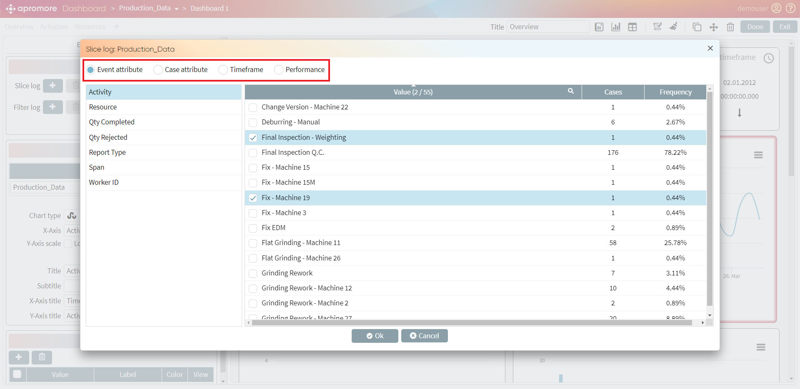
After clicking on OK, we can see the details of the selection we made.


Click on Apply, to see the results.

Similarly, we can either slice by Case attribute, Performance or Timeframe.
In case of Timeframe and Performance there is an option of Add slice line. For this click on the button next to Add slice line and slide the slider. Alternatively, you can also select a date from the date picker.
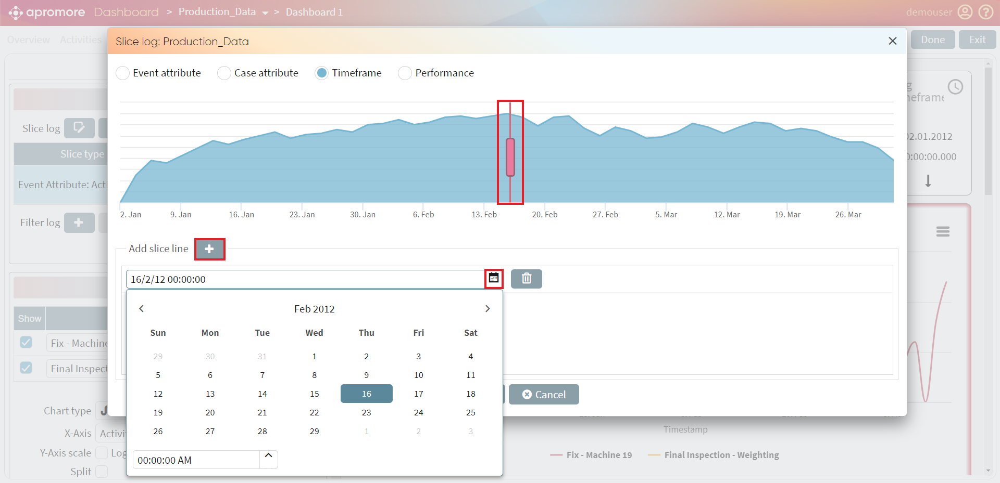
Advanced > Filter
We can add a filter by clicking on the button next to Filter log.
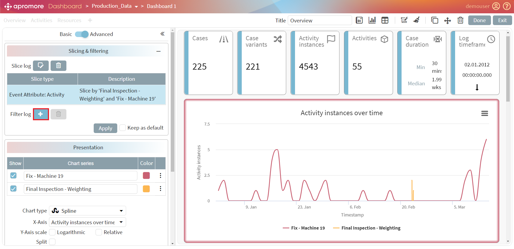
Select the desired filter and click on Ok. For optimal use of filters, please go through the Filter Log manual.
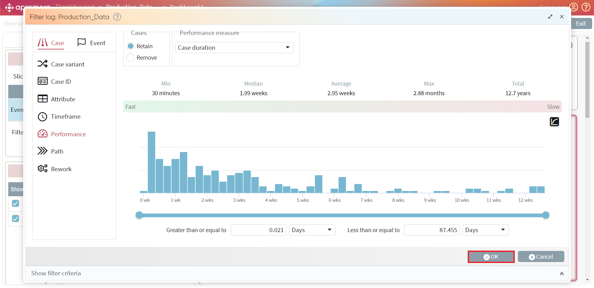
Filter Log window appears. Click OK to complete filter setting.
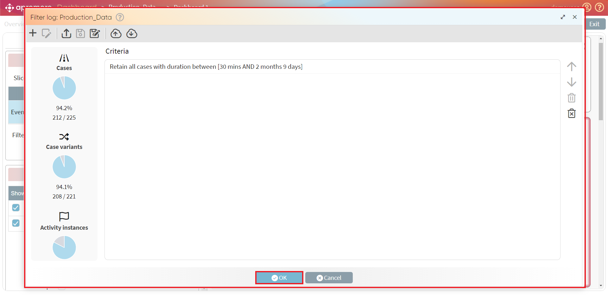
To apply the filter click on Apply in the Slicing and Filtering section.

Bemerkung
While slicing/filtering log, we may get a warning sign stating if there is a problem. Hover over to see the details.

Add Reference Lines
For visualization purpose, we can also add reference lines to a chart to mark important timelines. For this click on the button in the Reference lines section.

Add KPI
We can add KPI target from the KPI thresholds section, which is available in the Basic view.

The Mean + Tolerance metric allows us to specify a mean performance metric with a specific tolerance (in percentage).

The Custom metric allows us to specify custom performance indicators.
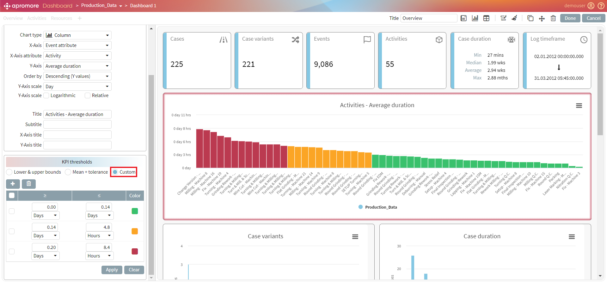
Compare Multiple Process Variants
Custom Performance dashboard not only helps us to dive into the statistical metrics of a single event log but also helps us to compare different versions of an event log. For this, select more than one version of the same event log and click on Analyze -> View performance dashboard.
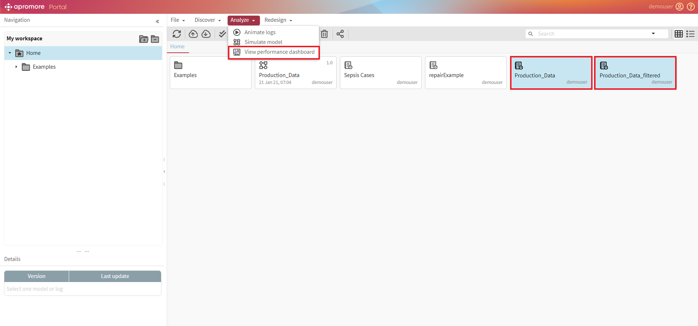
We see the charts of both the logs combined.
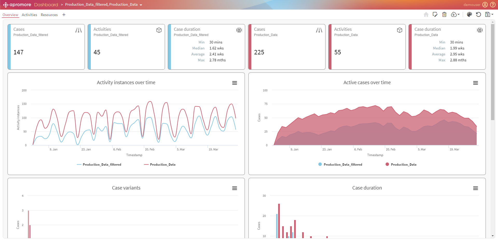
Split Charts
We can also choose to split charts to compare multiple process variants.

Zoom-in/Zoom-out
We can zoom into the graph by simply dragging the mouse over the part of the chart we would like to zoom.

We can zoom out of the graph by clicking on Reset Zoom button.

Add filter
To add a filter, click on the drop-down button next to the log name.
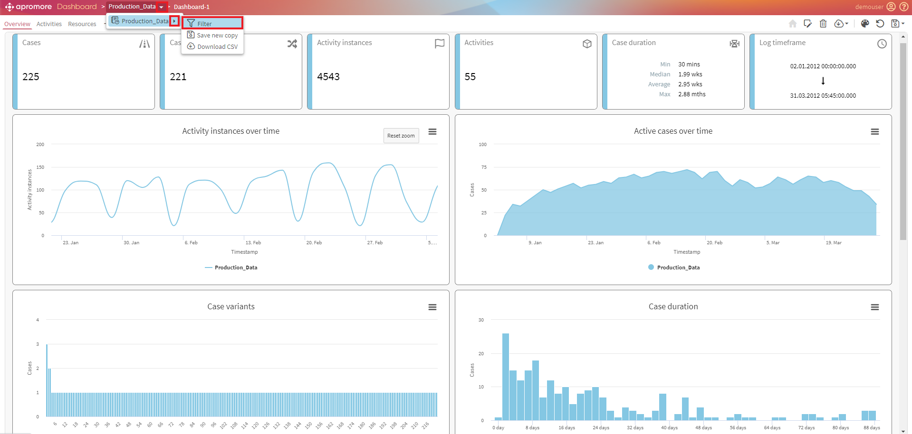
Filter log window appears. Select the desired filter and click on Ok. For optimal use of filters, please go through the Filtser Log manual.

Create a filter and click on OK.

Export/Download Chart
We can also print or download a chart to a PNG, JPEG, PDF, SVG vector, CSV and XLS file.

Clone Chart
To add the same chart again, click Edit view, select the chart and click on Clone content.
Organize Charts
In case of multiple charts/stats, we can re-arrange it by clicking on the 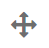 button and simply moving the charts/stats by drag-and-drop method. Click the move button once to move a selected block. Click the move button twice to move all the blocks.
{kind=link}
Remove Chart/Tile/Table
In order to remove a chart/table/block, select a chart and click on .
{kind=link}

Copy Format
To copy the formatting settings used in one block to another block, select a chart/tile/table and click on the  button.
button.

Click on the button once to copy the formatting from one block to another. Double click to paste to multiple blocks. We can see the style of the block to be copied. Click on another block to paste the formatting settings.
Copy Settings
To copy the filter and slicing rules from one block to another, select the block and click on the  button.
button.
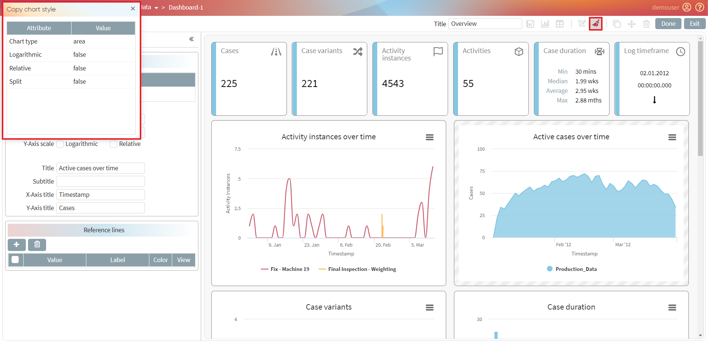
Click on the button once to copy the settings from one block to another. Double click to paste to multiple blocks. We can see the slicing and filtering rules of the block to be copied. Click on another block to paste the settings.

Edit Dashboard
To edit the new a dashboard click on the  button.
button.
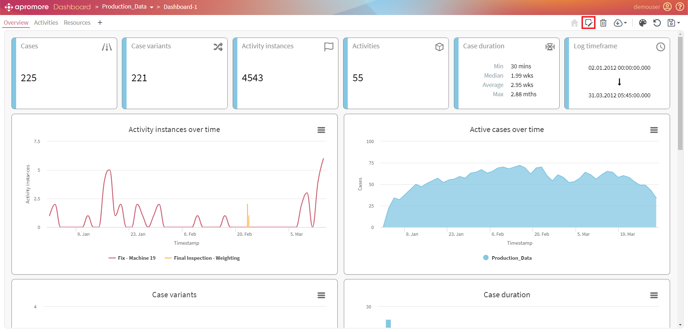
Download Dashboard
To download the current view of the dashboard, click on the Download data of current view in CSV button.
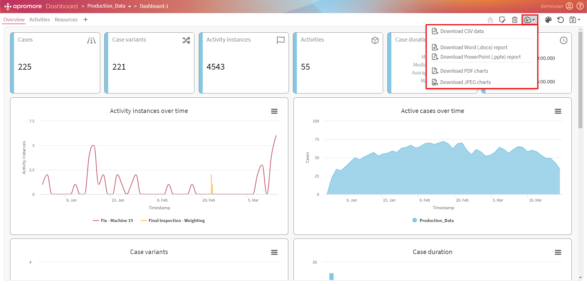
We can select from a wide range of encoding options to download the dashboard into a CSV file.
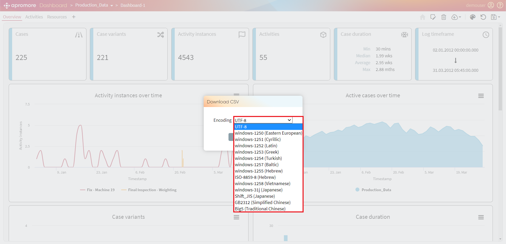
Select the appropriate option and Click on Download.

The file will be downloaded as a zip file and contain all the performance metrics charts/tiles/tables.

Set Dashboard as “Home”
For ease of access, we can set a dashboard as Home by clicking on the  button.
button.

Change style of dashboard
To change the style of the dashboard, click on the button and select from different styling options.
{kind=link}
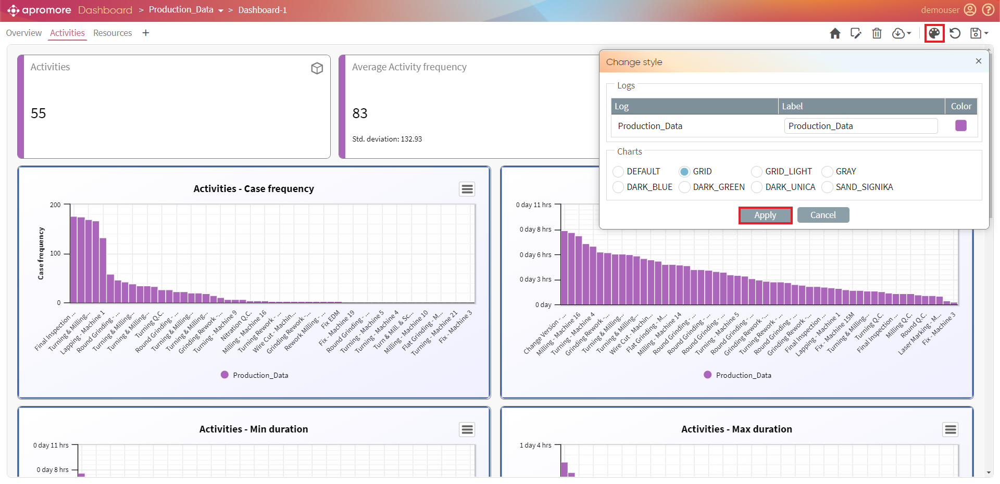
Change Scale
The scale can also be changed to Logarithmic and Relative from Y-Axis scale.

Reset Views
In case of dashboards created from existing views or changes made to an existing default view (Overview, Resources, Activities), we can choose to reset view of the dashboard by clicking on the button. We can choose to reset the current view or all the views.
{kind=link}
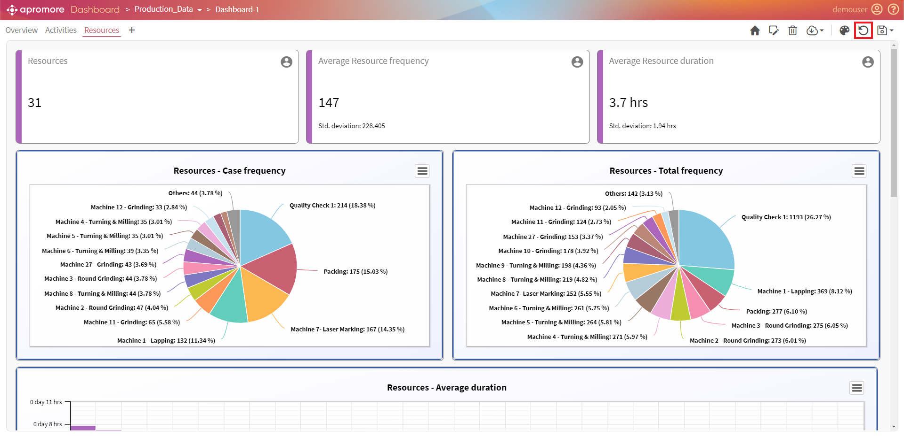